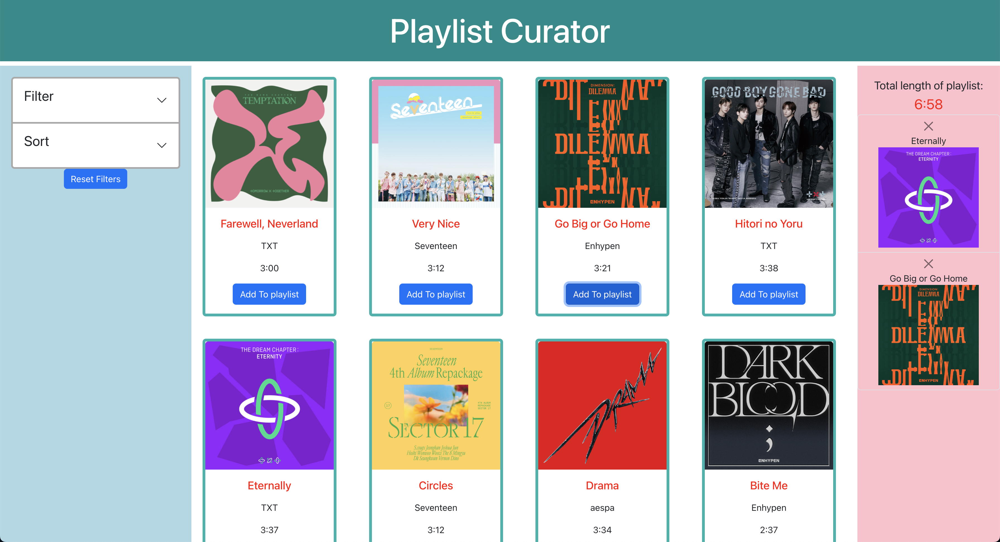

Common features
There were a few things that I noticed were common amongst the 3 shopping websites:
- They all had sorting dropdowns of different metrics: relevancy, price, and the like.
- They had metrics on the side that would be adjusted according to the product.
- For example, if I searched up women’s shirts, it showed options like “blouses”, “neckline”, “sleeve type” etc. in addition to the shipping, prices etc. for all products.
About Amazon
Most successful feature:
Including the icons of the items of the cart in a small sidebar on the right hand side. That way, users can find roughly what is in the cart without clicking into it and also delete items accordingly as well.
Least successful aspect:
The sidebar filters are not compressible– which could be good for finding buttons but it does make the sidebar quite long to navigate.
About Walmart
Most successful feature:
Its organized layout and usage of colored text and labels to bring attention to specific metrics that are useful to the user. The prices of each item are bolded to stand out in comparison to the description, rating, and the shipping status of the item. Also, Walmart has arguably the least cluttered product cards out of the 3.
Least successful aspect:
Could probably use a bit of better item alignment regarding scanning patterns on the top bar menu items– I almost did not find the sorting feature because it was all the way on the right hand side away from all of the other filters.
About Target
Most successful feature:
All adjustable features are concentrated in one area: the top left corner, so it partially solves the problem that Walmart has with the sort dropdown. These buttons then expand out into the dropdowns that you find in the other websites. Also, Target has a hover effect that shows the product from a different angle which is quite cool.
Least successful aspect:
It lacks what Walmart has in terms of using formatting to emphasize important information– it uses colors for the prices, but the entire webpage has almost the same formatting, which makes it a bit difficult for the user to find what information they should be focusing on.
Features that I want to implement in my website
- I definitely want to keep all of the filters and sorters on the left sidebar. If I had more sort filters, I probably would not condense it into buttons like Target and would follow Walmart’s scheme of having multiple filter dropdowns, but since we only have 2, I will make dropdowns for filter and sort to implement the dropdown concept.
- I also like the usage of keeping an icon-based cart status on the right side bar for Amazon, which I will use to fill up the space on the right side of the webpage.
- Lastly, I will emulate Target’s option for keeping the add to cart button on the product page rather than in the details page of each product (so it seems that they are actually able to buy the product rather than just look at it).
I ultimately decided on creating a Spotify-like replica where users can add songs to a playlist (the aggregator). Users can sort songs by duration, and they can also filter by artist and by time duration as well.
You can access this website here.
Filter functionality
My website contains the ability to only display songs by certain artists, using a checkbox dropdown as such (the default setting is all artists checked).
There is also the functionality to only display songs that are under a certain time duration (which one can enable with the checkbox and move the slider around).
Sort functionality
This functionality is disabled by default, but the user can enable the sort and choose to sort songs by duration either in ascending or descending order.
Aggregate functionality
Users can add a song to the playlist by clicking the "Add to playlist" button associated with each song. The song will the pop up on the right hand bar, and you can remove it any time by clicking the x button.
A running total of the length of the playlist is also displayed.

I mainly struggled a bit to add customizable CSS to the react-bootstrap components that I had utilized rather than the React functionality aspect, so I had to modify my design greatly from what I had intended.
There were also many design decisions that could have been better made if I had more time (e.g. making sure that if I ever added more songs to this playlist, that I only had to change the code in one place rather than in several components).
Overall, this project was very interesting! I found it very exciting to be able to use React to make my website more interactive, and it was very satisfying to build this website from the ground up.